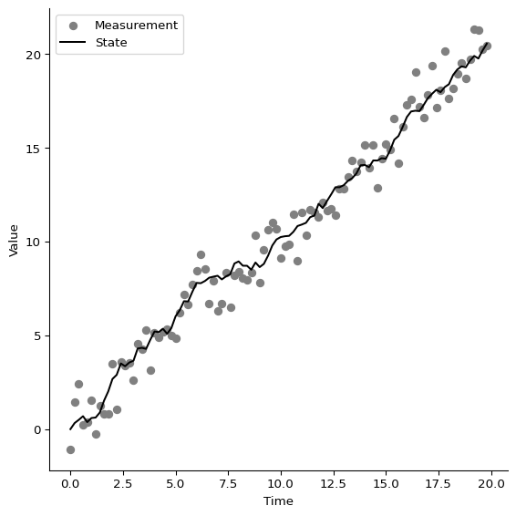
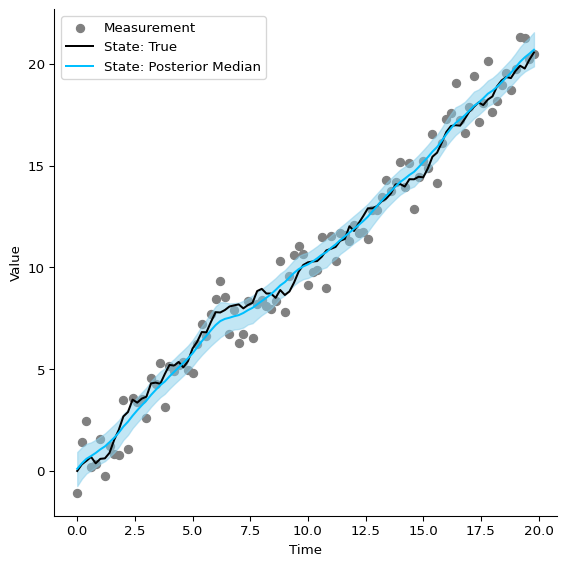
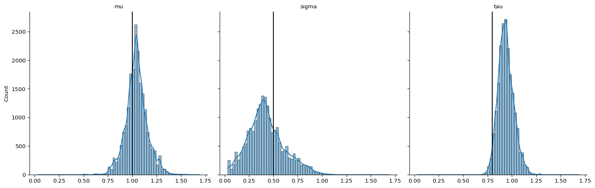
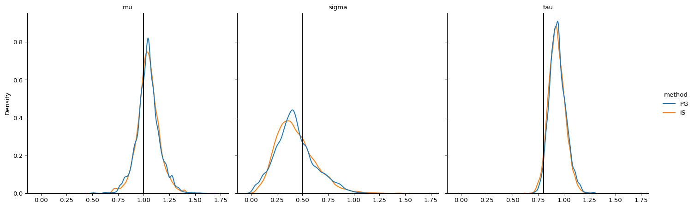

Bayesian Inference with PFJAX
Michelle Ko, Martin Lysy 2022-05-18
Summary
In the Introduction to PFJAX, we saw how to set up a model class for a state-space model and how to use a particle filter to estimate its marginal likelihood
In this tutorial, we’ll use PFJAX to sample from the posterior distribution \(p(\tth \mid \yy_{0:T}) \propto p(\yy_{0:T} \mid \tth) \pi(\tth)\) via Markov chain Monte Carlo (MCMC). There are essentially two ways to go about this:
- Do MCMC directly on the posterior distribution \(p(\tth \mid \yy_{0:T})\).
- Do MCMC on the joint distribution of \(p(\xx_{0:T}, \tth \mid \yy_{0:T})\) using a Gibbs sampler alternating between draws from \(p(\tth \mid \xx_{0:T}, \yy_{0:T})\) and from \(p(\xx_{0:T} \mid \tth, \yy_{0:T})\), where the latter is obtained with a particle filter/smoother.
Here we’ll be implementing a version of the latter, i.e., a Gibbs sampler in which the parameter draws from \(p(\tth \mid \xx_{0:T}, \yy_{0:T})\) are obtained using adaptive random walk Metropolis-within-Gibbs sampling.
Benchmark Model
We’ll be using a Bootstrap filter for the Brownian motion with drift model defined in the Introduction:
where the model parameters are \(\tth = (\mu, \log \sigma, \log \tau)\).
The details of setting up the appropriate model class are provided in
the Introduction. Here we’ll use the version of this model
provided with PFJAX: pfjax.models.BMModel.
# jax
import jax
import jax.numpy as jnp
import jax.scipy as jsp
import jax.random as random
from functools import partial
# plotting
import numpy as np
import pandas as pd
import seaborn as sns
import matplotlib.pyplot as plt
# pfjax
import pfjax as pf
import pfjax.mcmc
from pfjax.models import BMModel
Simulate Data
# initial key for random numbers
key = random.PRNGKey(0)
# parameter values
mu, sigma, tau = 1., .5, .8
theta_true = jnp.array([mu, jnp.log(sigma), jnp.log(tau)])
# data specification
dt = .2
n_obs = 100
x_init = jnp.array([0.])
# simulate data
bm_model = BMModel(
dt=dt,
unconstrained_theta=True # puts theta on the unconstrained scale
)
key, subkey = random.split(key)
y_meas, x_state = pf.simulate(
model=bm_model,
key=subkey,
n_obs=n_obs,
x_init=x_init,
theta=theta_true
)
# plot data
plot_df = (pd.DataFrame({"time": jnp.arange(n_obs) * dt,
"state": jnp.squeeze(x_state),
"meas": jnp.squeeze(y_meas)}))
g = sns.FacetGrid(plot_df, height = 6)
g = g.map(plt.scatter, "time", "meas", color="grey")
plt.plot(plot_df['time'], plot_df['state'], color='black')
plt.legend(labels=["Measurement","State"])
plt.xlabel("Time")
plt.ylabel("Value")
plt.show()

Particle Gibbs Sampler
-
We’ll use a flat prior distribution \(\pi(\tth) \propto 1\).
-
The update for \(p(\xx_{0:T} \mid \tth, \yy_{0:T})\) uses the functions
pfjax.particle_filter()andpfjax.particle_smooth(). -
The update for \(p(\tth \mid \xx_{0:T}, \yy_{0:T})\) uses the adaptive Metropolis-within-Gibbs sampler provided by the class
pfjax.mcmc.AdaptiveMWG. The design of this sampler is heavily inspired by BlackJAX.
def particle_gibbs(key, n_iter, theta_init, x_state_init, n_particles, rw_sd):
"""
Sample from the joint posterior distribution of parameters and latent states using a Particle Gibbs sampler.
Args:
key: PRNG key.
n_iter: Number of MCMC iterations.
theta_init: A vector of `n_params` initial parameter values on the unconstrained scale.
x_state_init: JAX PyTree of initial state variables.
n_particles: Number of particles for the particle filter.
rw_sd: Vector of `n_params` initial standard deviations for the adaptive MWG proposal.
Returns:
A dictionary with elements
- **x_state** - MCMC output for the state variables, with leading dimension `n_iter`.
- **theta** - MCMC output for the unconstrained parameters, with leading dimension `n_iter`.
- **accept_rate** - Vector of `n_params` acceptance rates. These should be close to 0.44.
"""
# initialize the sampler
n_params = theta_init.size
amwg = pfjax.mcmc.AdaptiveMWG()
# initial state of MWG sampler
initial_state = {
"theta": theta_init,
"x_state": x_state_init,
"adapt_pars": amwg.init(rw_sd),
}
def mcmc_update(key, theta, x_state, adapt_pars):
"""
MCMC update for parameters and latent variables.
Use Adaptive MWG for the former and a particle filter for the latter.
"""
keys = jax.random.split(key, num=3) # two for particle_filter, one for amwg
# latent variable update
pf_out = pf.particle_filter(
model=bm_model,
key=keys[0],
y_meas=y_meas,
theta=theta,
n_particles=n_particles,
history=True
)
x_state = pf.particle_smooth(
key=keys[1],
logw=pf_out["logw"][y_meas.shape[0]-1],
x_particles=pf_out["x_particles"],
ancestors=pf_out["resample_out"]["ancestors"]
)
# parameter update
def logpost(theta):
"""
Log-posterior of the conditional parameter distribution.
"""
return pf.loglik_full(
model=bm_model,
theta=theta,
x_state=x_state,
y_meas=y_meas
)
theta_state, accept = amwg.step(
key=keys[2],
position=theta,
logprob_fn=logpost,
rw_sd=adapt_pars["rw_sd"]
)
# adapt random walk jump sizes
adapt_pars = amwg.adapt(pars=adapt_pars, accept=accept)
return theta_state, x_state, adapt_pars, accept
@jax.jit
def step(state, key):
"""
One step of MCMC update.
"""
theta, x_state, adapt_pars, accept = mcmc_update(
key=key,
theta=state["theta"],
x_state=state["x_state"],
adapt_pars=state["adapt_pars"]
)
new_state = {
"theta": theta,
"x_state": x_state,
"adapt_pars": adapt_pars
}
stack_state = {
"theta": theta,
"x_state": x_state
}
return new_state, stack_state
keys = jax.random.split(key, num=n_iter)
state, out = jax.lax.scan(step, initial_state, keys)
# calculate acceptance rate
out["accept_rate"] = (1.0 * state["adapt_pars"]["n_accept"]) / n_iter
return out
Run Sampler
n_particles = 50
rw_sd = 1. * jnp.array([1., 1., 1.])
n_iter = 20_000
key, subkey = jax.random.split(key)
pg_out = particle_gibbs(
key=subkey,
n_iter=n_iter,
theta_init=theta_true,
x_state_init=x_state,
n_particles=n_particles,
rw_sd=rw_sd
)
pg_out["accept_rate"] # should be close to 0.44
Array([0.44425, 0.435 , 0.43565], dtype=float32)
Plot MCMC Output
First we’ll start with the posterior of the latent states \(p(\xx_{0:T} \mid \yy_{0:T})\) against their true values.
# plot data
plot_pg = (pd.DataFrame({"time": jnp.arange(n_obs) * dt,
"state": jnp.squeeze(x_state),
"meas": jnp.squeeze(y_meas),
"med": jnp.squeeze(jnp.median(pg_out["x_state"],axis=0)),
"2.5th": jnp.squeeze(jnp.percentile(pg_out["x_state"], 2.5, axis=0)),
"97.5th": jnp.squeeze(jnp.percentile(pg_out["x_state"], 97.5, axis=0))}))
g = sns.FacetGrid(plot_pg, height = 6)
g = g.map(plt.scatter, "time", "meas", color="grey")
plt.plot(plot_df['time'], plot_pg['state'], color='black')
plt.plot(plot_df['time'], plot_pg['med'], color='deepskyblue')
plt.fill_between(plot_df['time'], plot_pg['2.5th'], plot_pg['97.5th'], color='skyblue', alpha=0.5)
plt.legend(labels=["Measurement", "State: True", "State: Posterior Median"])
plt.xlabel("Time")
plt.ylabel("Value")
plt.show()

Histograms for the sampled values of each parameter are shown below.
plot_pg = pd.DataFrame({"iter": jnp.arange(n_iter),
"mu": pg_out['theta'][:,0],
"sigma": jnp.exp(pg_out['theta'][:,1]),
"tau": jnp.exp(pg_out['theta'][:,2])})
plot_pg = pd.melt(plot_pg, id_vars=['iter'], value_vars=['mu', 'sigma', 'tau'])
hp = sns.displot(
data=plot_pg,
x="value",
col="variable",
kde=True
)
hp.set_titles(col_template="{col_name}")
hp.set(xlabel=None)
# add true parameter values
for ax, theta in zip(hp.axes.flat, jnp.array([mu, sigma, tau])):
ax.axvline(theta, color="black")

Comparison to True Posterior
To further confirm that the implementation of the sampler is correct, we
compare the MCMC output against that of an importance sampler from the
exact posterior \(p(\tth \mid \yy_{0:T})\) of the BM model. While this is
generally unavailable, for the BM model it can be computed from the
exact loglikelihood pfjax.models.BMModel.loglik_exact().
To implement the importance sampler, we first find the mode and quadrature of \(\log p(\tth \mid \yy_{0:T})\). Our importance distribution is then a multivariate normal with mean given by the mode and variance given by some inflation factor of the quadrature.
The mode of the BM log-likelihood function is found with a simple gradient ascent, with the true parameters as initial values. The Hessian is also obtained to calculate the quadrature of the log-likelihood function.
grad_fun = jax.jit(jax.grad(bm_model.loglik_exact, argnums = 1))
# Gradient ascent learning rate
learning_rate = 0.01
theta_mode = theta_true
for i in range(1000):
grads = grad_fun(y_meas, theta_mode)
# Update parameters via gradient ascent
theta_mode = theta_mode + learning_rate * grads
# def hessian(f):
# return jax.jacfwd(jax.grad(f, argnums = 2), argnums = 2)
# hess = hessian(bm_loglik)(y_meas, dt, theta_mode)
hess = jax.jacfwd(jax.jacrev(bm_model.loglik_exact, argnums=1), argnums=1)(y_meas, theta_mode)
theta_quad = -jnp.linalg.inv(hess)
print(theta_mode)
print(theta_true)
print(theta_quad)
[ 1.0411831 -1.0344263 -0.07254256]
[ 1. -0.6931472 -0.22314353]
[[ 7.1736779e-03 1.7677188e-03 -1.5563695e-04]
[ 1.7676934e-03 1.9352004e-01 -1.1542980e-02]
[-1.5563211e-04 -1.1542980e-02 6.5114573e-03]]
From the mode-quadrature proposal distribution, parameter samples are drawn with an inflation factor of 1.5 for the covariance. After adjusting the weights of each draw via importance sampling (IS), the parameter samples are redrawn accordingly. The resulting kernel density estimates are shown below, with an overlay of those obtained from the particle Gibbs (PG) sampler above.
# Draw from the mode-quadrature distribution
infl = 1.5 # Inflation factor
key, subkey = jax.random.split(key)
draws = random.multivariate_normal(
subkey, mean=theta_mode, cov=infl*theta_quad, shape=(n_iter,))
logpost = jax.jit(bm_model.loglik_exact)
# Importance sampling with mode-quadrature proposal and target proposal (BM log-likelihood)
logq_x = jsp.stats.multivariate_normal.logpdf(
draws, mean=theta_mode, cov=infl*theta_quad)
# logp_x = jnp.array([bm_loglik(y_meas, dt, draws[i,:]) for i in range(n_iter)])
logp_x = jax.vmap(
fun=logpost,
in_axes=(None, 0)
)(y_meas, draws)
# Get the likelihood ratio and normalize
logw = logp_x - logq_x
prob = pf.utils.logw_to_prob(logw)
# importance sample
key, subkey = jax.random.split(key)
imp_index = jax.random.choice(
subkey, a=n_iter, p=prob, shape=(n_iter,), replace=True)
theta_imp = draws[imp_index, :]
plot_imp = pd.DataFrame({"iter": jnp.arange(n_iter),
"mu": theta_imp[:,0],
"sigma": jnp.exp(theta_imp[:,1]),
"tau": jnp.exp(theta_imp[:,2])})
plot_imp = pd.melt(plot_imp, id_vars=['iter'], value_vars=['mu', 'sigma', 'tau'])
plot_df = pd.concat([plot_pg, plot_imp], ignore_index=True)
plot_df["method"] = np.repeat(["PG", "IS"], len(plot_pg["variable"]))
hp = sns.displot(
data=plot_df,
x="value",
hue="method",
col="variable",
kind="kde"
)
hp.set_titles(col_template="{col_name}")
hp.set(xlabel=None)
# add true parameter values
for ax, theta in zip(hp.axes.flat, jnp.array([mu, sigma, tau])):
ax.axvline(theta, color="black")
